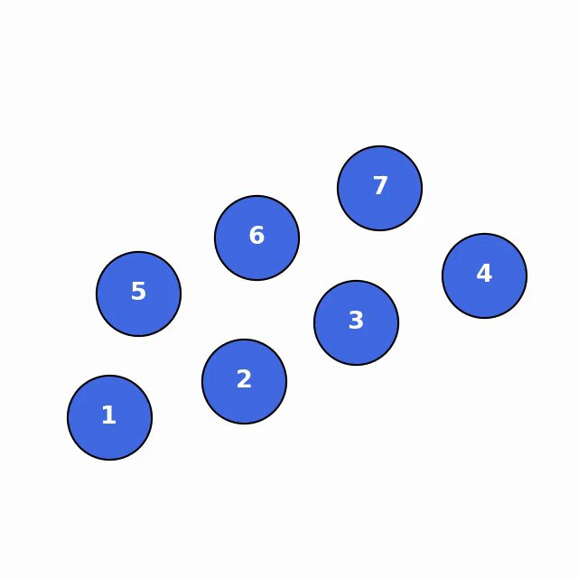

The idea
Bias the dynamics, keep the kinetics
Atoms spend almost all of their time rattling inside energy basins, yet the rare escapes between basins decide how a material evolves. Brute-force simulation has to wait for every one of them. Instead, each step is pushed toward the target state, and every path is then reweighted so that the original rates are recovered.
-
Learn
A graph neural network reads interatomic distances and learns an importance function, I, that approximates the committor. No collective variable or reaction coordinate goes in.
-
Bias
The network tilts every overdamped Langevin step toward the product state, so rare transitions are sampled often.
-
Reweight
A known factor, I at the start of the path over I at its end, undoes the tilt. Path weights built from Monte Carlo normalization factors absorb the network’s error, so an imperfect network costs variance, not bias.
Benchmark In the posted preprint
Seven Lennard-Jones discs
- d = 14
- 7 discs in 2D
- 4 competing modes
- 600 K, fine-tuned down to 300 K

 Accelerated path · C3 → C2Animation
Accelerated path · C3 → C2Animation
The rare event
Seven discs with a soft-core Lennard-Jones interaction start in the C3 arrangement and rearrange into C2 by four competing modes: in M1 and M2 a pair of discs slides, in M3 and M4 a triplet. The barriers, 0.49 and 0.52 eV, are about 10 kBT at 600 K, so each transition is a rare event.
What we found
At 600 K the importance-sampled rate is in excellent agreement with brute force, and the split between modes comes out right. Treating the network as the exact committor instead gives a rate about 40% too low, and counting paths without their weights predicts the wrong trend. Fine-tuned down to 300 K, where brute force cannot collect enough transitions, the rates track Kramers theory, to within about 1% at 300 K.
- 4 modesresolved with their correct shares
- ≈40%committor-only rate too low at 600 K
- ≈1%from Kramers theory at 300 K
Why it matters
LJ7 is the proving ground: small enough that every number can be checked against brute-force Langevin dynamics or Kramers rate theory before moving on to the materials.
Four ways out of C3
Share of the total rate at 600 K for each mode.
-
StartC3
Seven discs, labeled 1 to 7; gray lines join nearest neighbors. Every mode below ends in a C2 state.
-
M1 · pair slideDiscs 1 and 5 slide up
Along the edge of discs 2 and 6. Barrier 0.49 eV.
0.3178 · brute force 0.3192 · unweighted 0.2273
-
M2 · mirror of M1Discs 4 and 7 slide up
Along the edge of discs 3 and 6. Barrier 0.49 eV.
0.3213 · brute force 0.3170 · unweighted 0.2263
-
M3 · triplet slideDiscs 1, 2 and 5 slide down
Along the edge of discs 3 and 6. Barrier 0.52 eV.
0.1811 · brute force 0.1838 · unweighted 0.2736
-
M4 · mirror of M3Discs 3, 4 and 7 slide down
Along the edge of discs 2 and 6. Barrier 0.52 eV.
0.1797 · brute force 0.1795 · unweighted 0.2721
Counted without their path weights (dashed ticks), the same sampled paths would wrongly put the triplet slides ahead of the pair slides.
Surface diffusion Revised manuscript in preparation
A platinum adatom on Pt(001)
- d = 387
- 129 mobile atoms, EAM
- 64 adatom sites
- 1000 K, reused at 900 to 700 K

The rare event
A single Pt adatom sits on a Pt(001) slab: 129 mobile atoms above two frozen layers, with an embedded-atom potential. It diffuses among 64 adatom sites, mostly by exchange, taking the place of a top-layer atom that is ejected onto a neighboring site. The target is any of the 63 empty sites, so it favors no mechanism.
What we found
At 1000 K the rate falls inside the brute-force 95% confidence interval, while the committor-only estimate is more than a factor of two too low. The paths also turned up a channel the study was not set up for: a long jump of two sites, carrying about 9% of the rate, which brute force confirms. Reused without retraining down to 700 K, the rates stay within 4% of the brute-force intervals through a more than sevenfold drop.
- 12 modeseach within 0.007 of brute force
- 9.3%long-jump share of the rate (brute force 8.9%)
- >2×committor-only rate too low at 1000 K
Why it matters
Adatom diffusion is an elementary step of mass transport with several competing mechanisms; exchange onto a diagonal site is the established self-diffusion mechanism of Pt on Pt(001).
Three channels, twelve modes
Share of the total rate at 1000 K for each channel. Barriers from minimum-energy paths.
-
Diagonal · by exchangeSwap onto a diagonal site
The adatom takes the place of a top-layer atom, which is ejected onto a diagonal site. Barrier 0.38 eV.
0.7142 · brute force 0.7166 · unweighted 0.8245
-
Crucifix · by exchange or by hoppingOnto a nearest-neighbor site
Exchange: the ejected atom lands on a nearest-neighbor site. Barrier 0.80 eV.
Hop: the adatom itself moves over. Barrier 1.07 eV.
0.1140 (both routes together) · brute force 0.1142 · unweighted 0.0719
-
Unanticipated
Long jumpA new adatom two sites away
The adatom sinks in and pushes a neighbor, which pushes the next atom up onto the surface.
0.0930 · brute force 0.0891 · unweighted 0.0520
The other 51 sites share the remaining 8% of the rate. Without the weights, the diagonal-to-crucifix ratio comes out 11.4641 instead of 6.2665 (brute force 6.2750).
Bulk diffusion Revised manuscript in preparation
A vacancy in bcc iron
- d = 2055
- 685 atoms, none fixed
- Fully periodic, EAM
- 800 K, reused at 700 to 500 K


The rare event
One site is empty in a 7 × 7 × 7 bcc α-Fe supercell of 685 atoms, periodic in every direction, with no atom held fixed. A transition happens when one of the eight nearest neighbors jumps into the vacant site along ⟨111⟩. At 800 K the barrier is about 9.7 kBT.
What we found
At 800 K the rate agrees with brute force to within 2.1%; the committor-only estimate is about 44% too low. The barrier was too high to train on directly at 800 K, so the network was trained at 1600 K and then refined. Reused without retraining, it stays within 3% of brute force at 700 and 600 K, and at 500 K, where no brute-force result exists, within 2% of the Arrhenius extrapolation of the brute-force rates.
- 2.1%gap to brute force at 800 K
- 189×rate drop to 500 K, same network
- 44%committor-only rate too low at 800 K
Why it matters
Vacancy migration is the elementary process that controls self-diffusion and solute transport in bcc metals.
One network, four temperatures
Trained at 800 K and reused unchanged at 700, 600 and 500 K.
- 800 K Trained here 2.1% from brute force
- 700 K Reused within 3% of brute force
- 600 K Reused within 3% of brute force
- 500 K Reused no brute force; within 2% of the Arrhenius extrapolation
The price of reuse is precision, not accuracy: at the same number of paths, the relative uncertainty grows from 0.8% at 800 K to 3.5% at 500 K.
Reuse across temperature
Trained once, reused colder
Each materials network was trained at the top of its temperature range (for Fe, after an initial training stage at 1600 K) and then reused, unchanged, at the lower temperatures. With the path weights, the importance-sampled rates (red) follow the brute-force line. The committor-only estimate (gray) changes far too slowly with temperature; for Pt its error even changes sign.




- >7×drop in the Pt rate from 1000 to 700 K, tracked with no retraining
- ≤3%gap to brute force for the Fe vacancy from 800 down to 600 K, one network throughout
- 3.6×committor-only overestimate for Pt at 700 K, after underestimating by more than 2× at 1000 K
All rates here are for overdamped Langevin dynamics with friction γ = 10 ps−1, used for both importance sampling and brute force. Their prefactors differ from those of inertial molecular dynamics, so they are not experimental diffusion rates.
Keep exploring
The methods behind the pictures
-
Accelerated Langevin Dynamics
The method in depth: how a learned importance function biases each Langevin step, and how path weights recover the original rates.
Read the method -
Accelerated MCMC
The same idea for Markov chain Monte Carlo: a neural network learns the bias potential in log-space, and reweighting each biased path recovers unbiased rates.
See the MCMC work -
Agent-Guided Variance Reduction
An agentic search driven by Claude Code selects the weight-control scheme that tames path-weight degeneracy for alanine dipeptide.
See the hackathon project